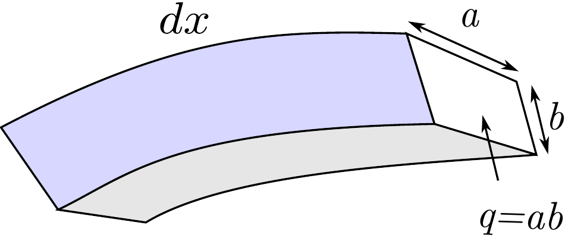
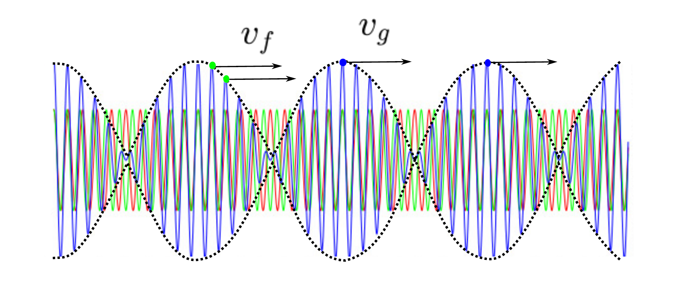
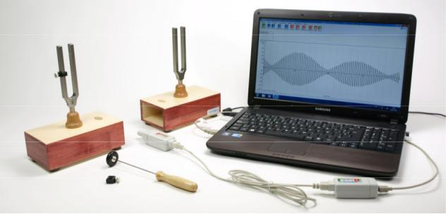

El objetivo de la práctica es obtener el módulo de Young de una barra de aluminio que forma parte de un diapasón, así como observar el fenómeno de los batidos debido a la interferencia de ondas con frecuencia similar.
Fundamento teórico
El módulo de Young, E, es una propiedad mecánica que cuantifica la rigidez de un sólido a través de la relación entre la tensión mecánica aplicada y la deformación longitudinal resultante. Por ello es indispensable en muchos problemas de ingeniería civil y está directamente relacionado con la frecuencia de vibración de un sólido.
Los diapasones están formados por dos barras de aluminio (u otro metal) fijadas por un extremo que vibran en torno a sus posiciones de equilibrio. Se utilizan fundamentalmente para estudios acústicos y en pruebas de audición. Las dimensiones físicas del diapasón, así como su módulo de Young, determinarán exactamente la frecuencia de vibración del primer armónico, la cual viene dada por
f=2πL21.852qρEI=πL21.852b48ρE,(5.1)
donde L es la longitud de la barra, I=ab3/12 es el segundo momento de área, q=ab es la sección transversal de la barra (ver figura 5.1) y ρ es la densidad del material (en este caso una aleación de aluminio).

Figura 5.1: Barra del diapasón.
Las ondas estacionarias producidas por el diapasón son transmitidas al aire de la caja de resonancia donde se convierten en ondas sonoras que, tras ser amplificadas por ésta, se propagan por el entorno. Si consideramos ahora dos diapasones y situamos una pesa en uno de ellos, de tal manera que la densidad y el módulo de Young sean distintos, podemos conseguir dos sonidos de distintas frecuencias. Las dos ondas interferirán entre sí dando lugar a batidos (ver figura 5.2), siendo la velocidad de fase y la velocidad de grupo iguales a la velocidad del sonido, c. Asumiendo que la amplitud de ambas ondas es aproximadamente la misma, el principio de superposición permite escribir
La resultante puede interpretararse como una onda viajando con velocidad de fasevf=Ω/K=c y amplitud modulada por una función periódica
y(x,t)=A(x,t)sin(Kx−Ωt+Φ).(5.8)
Esta amplitud suele denominarse envolvente de la onda y la velocidad con la que viaja se denomina velocidad de grupovg=Δω/Δk=c.

Figura 5.2: Propagación de batidos (azul) resultantes de la superposición de dos ondas armónicas (rojo y verde). La envolvente en línea discontinua.
Montaje experimental
El montaje experimental consiste de dos diapasones montados sobre con una caja de resonancia. Se dispone de un micrófono conectado a un ordenador para el análisis de las señales acústicas. En un primer tiempo se estudiará la frecuencia de vibración de un diapasón para determinar el modulo de Young del objeto. Para ello se analiza el espectro de Fourier de la onda acústica captada por el micrófono. En la segunda parte se estudia la aparición de batidos en la amplitud de la onda acústica cuando se superponen dos sonidos con frecuencias muy parecidas.

Figura 5.3: Montaje experimental.
Se ha preparado un programa de análisis de la señal para facilitar estas tareas. El micrófono debe situarse cerca de la fuente de sonido y el programa se debe ejecutar rápidamente después de un golpe seco sobre el diapasón.
Resultados
Medir con un calibre la longitud L y el lado b de la barra de vibración.
L±εL= b±εb=
Usando el analizador de espectro de Fourier en el ordenador, medir la frecuencia de vibración 5 veces:
f±εf
Calcular la frecuencia media.
f±εf=
A partir de los fundamentos teóricos y de la fórmula 5.1 calcular el módulo de Young E de la barra, suponiendo que las barras podrían estar hechas de alguna las aleaciones que se muestran en la tabla. Asimismo calcule el error relativo de cada una de las estimaciones.
Aleación
ρ(kg/m3)
Eteo(GPa)
E(GPa)±εE
∣Eteo−E∣/Eteo
1100
2710
69
2011
2830
69
2024
2780
73
2219
2840
73
5154
2660
70
7050
2830
72
Colocar ahora una pesa en una de las barras del diapasón. Situando las dos cajas de resonancia cerca una de la otra, golpear sucesivamente los dos diapasones y grabar la onda sonora con el programa informático. Obtener una gráfica en la cual se aprecie con claridad el fenómeno de los batidos.
Discusión
La discusión del experimento es libre, si bien es necesario aclarar al menos los siguientes aspectos:
Discuta de qué aleación de aluminio es más probable que estén hechas las barras de los diapasones.
Discuta de forma cuantitativa las principales fuentes de error que afectan al cálculo del módulo de Young. Si es viable experimentalmente, indique de qué manera se podría reducir el error.
Cuestiones
Calcular la longitud de onda de la onda sonora del diapasón y compararla con la longitud del lado mayor de la caja de resonancia. ¿Cual es la relación entre ambas medidas? ¿Es una coincidencia?